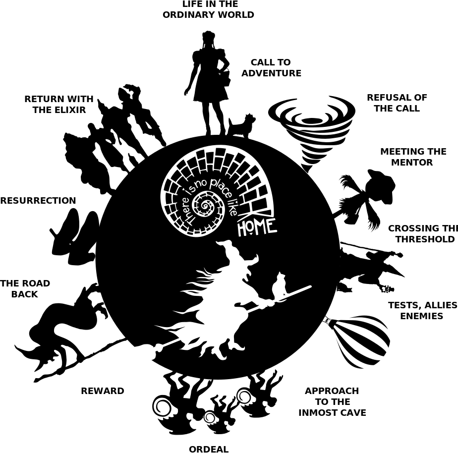
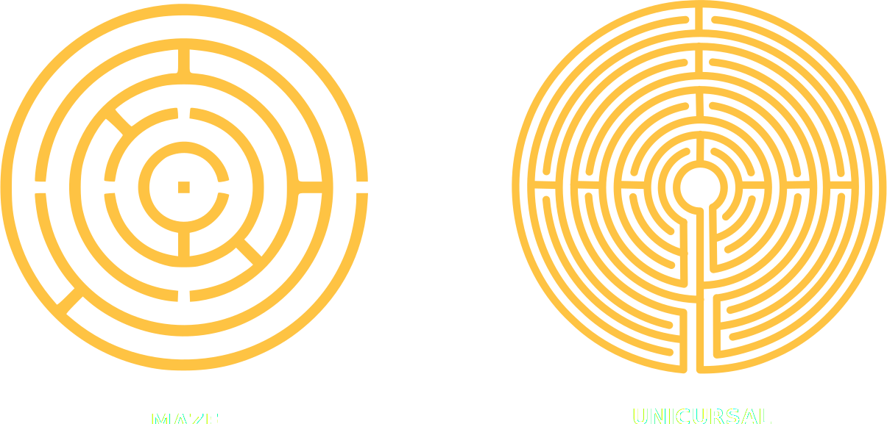
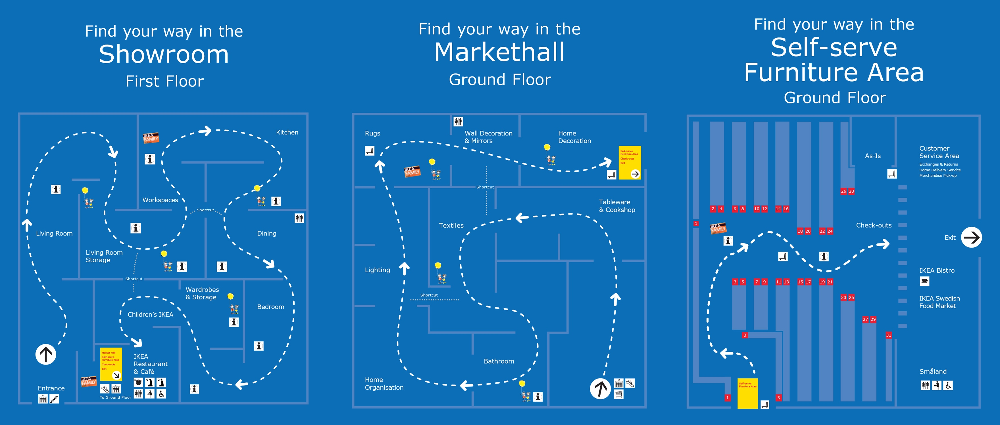

Once upon a time...

Storytelling
Same story or fragments that we are hearing from many users
We trust experiences
The narrative impact of design invites action and provoke emotions
We remember how brands make us feel
The Hero with a Thousand Faces
“A hero ventures forth from the world of common day into a region of supernatural wonder: fabulous forces are there encountered and a decisive victory is won: the hero comes back from this mysterious adventure with the power to bestow boons on his fellow man.”
Joseph Campbell

Customer Journey
Your user is the hero of the story

